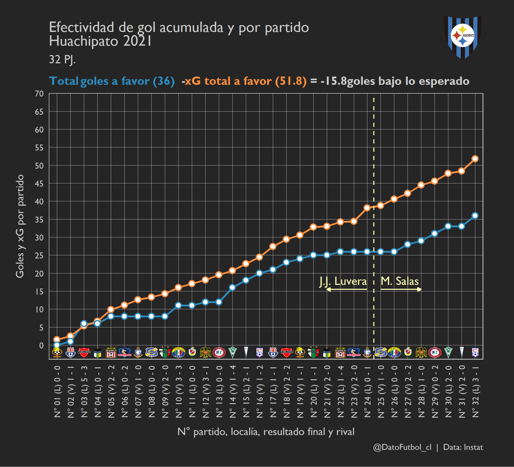

Así quedó la tabla de posiciones de la Primera División de Chile una vez terminado el Campeonato AFP Plan Vital 2021:
Algunos de los puntos más llamativos descritos desde la tabla de posiciones:
- El repunte de la UC: La salida anticipada de Poyet marcó un antes y un después. Paulucci ganó 13 de 14 partidos que dirigió por el torneo nacional, alcanzando un rendimiento del 92.8% y estableciendo un nuevo récord como mejor DT debutante en toda la historia de la UC.
Una de las métricas que más llama la atención es la diferencia entre los puntos obtenidos y los puntos esperados (PTS - XPTS, última columna), con un valor de +20.6 puntos sobre lo esperado, el más alto de la liga. Los puntos esperados (XPTS) se estiman considerando la diferencia entre el xG a favor (xGF) y el xG en contra (xGC) en cada partido (Dif. xG). Por supuesto, mientras mayor es la diferencia de xG, mayor es la probabilidad de ganar puntos.
El alto valor en el caso de la UC si bien en parte se explica por haber generado mayor peligro que su rival (Dif. xG), alcanzando el 2do lugar de la liga en esa métrica con +10.5; destaca principalmente su efectividad de gol con un valor GF - xGF de +9.9 goles sobre lo esperado (también el más alto de la liga). La UC fue muy efectiva, sobre todo en la última parte del torneo:
A nivel individual, prácticamente todos los jugadores que hicieron al menos un gol (excepto V. Huerta) aportaron con una efectividad de gol positiva (G - xG):
- Colo-Colo tuvo la mejor diferencia “xGF - xGC” del torneo: +22.8
Esto se traduce en que Colo-Colo fue el equipo que más superó a sus rivales en la generación ofensiva. A continuación un gráfico con las métricas xG a favor, xG en contra y su respectivo valor neto (Dif. xG) fecha a fecha, donde se observa que en solo 6 de los 32 partidos jugados Colo-Colo fue superado en xG (barras rojas), dentro de los cuales están los 2 partidos que jugó con juveniles (Ñublense y Audax en calidad de visitante):
Otros equipos que comparten con Colo-Colo la zona óptima (mayor xG a favor y menor xG en contra que el promedio de la liga) son: Huachipato, Ñublense y Curicó. La UC y Palestino fueron los que más xG generaron, pero con un xG en contra cerca del promedio de la liga. Melipilla y Antofagasta son los que más recibieron xG en contra, mientras que su xG a favor estuvo bajo el promedio.
- Huachipato fue lo contrario de la UC en cuanto a efectividad de gol con un valor de -15.8 goles bajo lo esperado, alcanzando -9.9 puntos bajo lo esperado. Para tener un orden de magnitud respecto a la importancia de la efectividad de gol: si se miran solo los valores XPTS, la UC y Huachipato habrían empatado en la misma posición de la tabla. El descenso de Huachipato después de 25 años estará marcado por la falta de gol, que con la leve mejora en el tramo final de Mario Salas no fue suficiente para zafar. Huachipato completó dos rachas distintas de 4 partidos consecutivos cada una sin marcar goles.

- El caso de Antofagasta:
Antofagasta fue ampliamente superada en la generación de peligro de gol (tuvo el valor más bajo de xG a favor - xG en contra: -14.7), pero de todos modos quedó 2° en “PTS - XPTS” con +18.6 puntos sobre lo esperado. ¿Por qué? A diferencia de la UC, la gracia de Antofagasta no estuvo en la propia efectividad de gol sino en la baja efectividad de gol de los rivales (GC - xGC), lo que se explica en gran parte por el excelente rendimiento de su arquero Ignacio González Catalán de 32 años, quien se quedó con la 5° portería menos batida de la liga y además con el 1° lugar en “Goles concedidos bajo lo esperado” (GC - xGC), tal y como se indica en la tabla a continuación con el top 10 de porteros con más de 800 minutos jugados considerando todos los partidos del año 2021 (torneo 2021, fin del torneo 2020, Copa Chile, copa internacionales, etc.). Se incluye adempás una comprobación al dividir por la cantidad de tiros en contra que efectivamente fueron al arco (últimas columnas):
Si no fuera por su portero y/o basándose exclusivamente en los puntos esperados (28.4 XPTS), Antofagasta habría descendido de manera directa.
- Bonus track: La hazaña de la U en los últimos 10 minutos del partido final convirtiendo 3 goles para revertir un 0-2, salvarse del descenso y de la promoción al alcanzar la undécima posición. En el siguiente gráfico el xG Timeline de ese partido frente a Unión La calera, cortesía de Stats Perform vía @OptaJavier en Twitter: